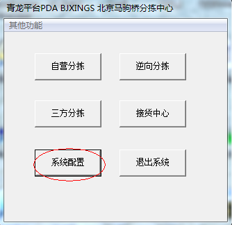
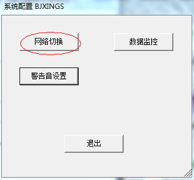
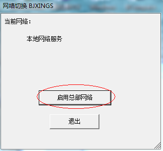

异常提报
- 非紧急系统问题请提报IT，24h内会给出回复，提报方式请参考“IT事件操作手册”
- 紧急系统问题，可拨打24h值班电话
- 配送&快运 13716955852
- 操作手册——IT事件提报操作手册
分拣中心PDA问题
- 1.1 操作提示“操作已超时”
- 1.2 本地缓存服务器暂时休克
- 1.3 三方发货时提示“该箱号还没有完验”
- 1.4 为何操作了三方分拣，异常查询里仍然是少验
- 1.5 分拣的时候提示“配置错误”
- 1.6 一单多件不齐可以发货吗？
打印客户端问题
- 1.1 操作提示“操作已超时”
-
请检查网络是否正常，现场可用PDA或者同一内网电脑，操作开始--->运行--->cmd， ping dms.etms.360buy.com（华中分拣中心 请ping dms1.etms.360buy.com）
- 1.2 本地缓存服务器暂时休克
-
请切换到总部网络继续分拣，切换总部网络方法：系统配置---网络切换。
   - 1.3 三方发货时提示“该箱号还没有完验”
-
请在异常查询菜单里查询多验或者少验的差异记录。多验代表已经验货、未分拣；少验代表已经分拣、未验货。
- 1.4 为何操作了三方分拣，异常查询里仍然是少验
-
请检查分拣的箱子和验货是否一致，检查是否使用三方分拣菜单进行分拣而非自营分拣。
- 1.5 分拣的时候提示“配置错误”
-
这种情况会出现在新开分拣中心的时候，请联系运营人员处理。
- 1.6 一单多件不齐可以发货吗？
-
可以分拣但发货时会有拦截提示
- 2.1 打印程序出现“读取服务器配置失败，更新失败”报错怎么办？
-
马上联系当地运维找总部运维杨刚，告知VPN隧道出现问题
- 2.2 打印程序很卡是什么原因？
-
1.POP如果打印发票卡在在CMD中ping下 fn.360buy.com 2.POP如果打印标签卡在CMD中ping下dms.etms.360buy.com 以上两种情况在打印界面右边可以看到调用时长，如果时长较长请联系运维和运营同事处理
- 2.3 新开的站点无法打印箱号
-
联系集团配送部杜石光维护基础资料
- 2.4 POP打印时发票和包裹签打印混乱
-
查看打印机是否设置正确后保存设置，有些时候是因为打印程序没有从压缩包解压出来导致设置无法保存。